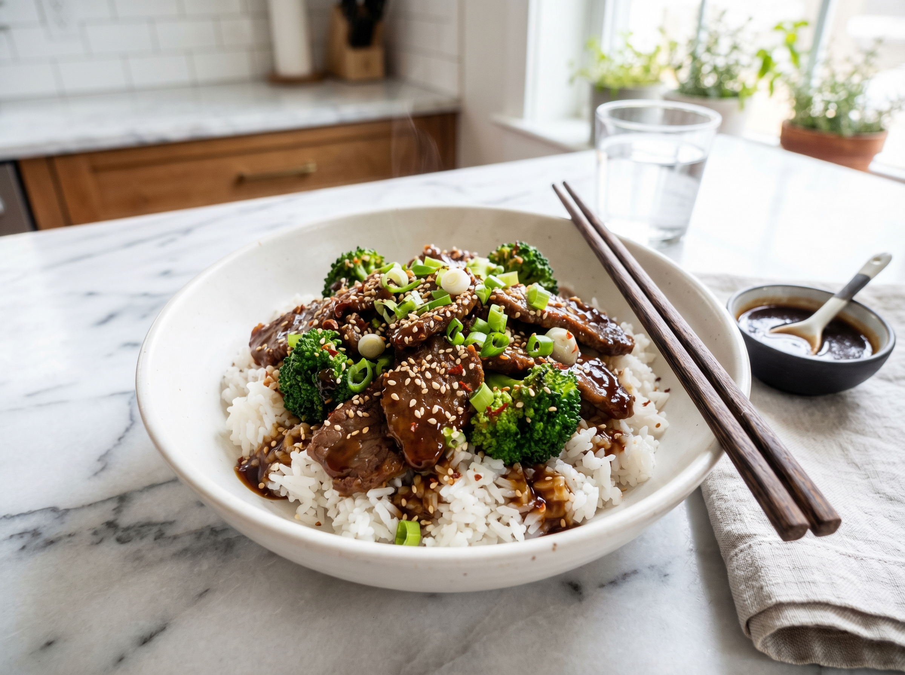

Easy Chicken Tikka Masala – Viral Favorite
Creamy, deeply spiced, made in 40 minutes. The spice blooming technique makes this better than restaurant delivery.
Globally-inspired weeknight dinners — bold, simple, tested in a real home kitchen. From pan to table in 30 minutes or less.
The hottest recipes everyone's talking about right now
Creamy, deeply spiced, made in 40 minutes. The spice blooming technique makes this better than restaurant delivery.
 Seafood · 10 min
Seafood · 10 min
The fastest recipe on the site. Bold, buttery shrimp done faster than delivery, with a sauce worth mopping up with bread.

Beef · 20 minThe velveting trick gives you silky-tender beef that blows any takeout out of the water — and it's done in 20 minutes.
Staff picks — our most-made recipes right now
Seafood · 10 min
The fastest recipe on the site. Bold, buttery shrimp done faster than delivery, with a sauce worth mopping up with bread.
Creamy, deeply spiced, made in 40 minutes. The spice blooming technique makes this better than restaurant delivery.
The velveting trick gives you silky-tender beef that blows any takeout out of the water — and it's done in 20 minutes.
 Seafood · 20 min
Seafood · 20 min
Juicy shrimp in a dreamy sun-dried tomato cream sauce. Looks impressive, secretly effortless.
 Chicken · 70 min
Chicken · 70 min
Restaurant-level crispy from the oven using the baking powder trick. The only wing recipe you'll ever need.
Rich and restaurant-quality. The pasta water secret makes the sauce impossibly silky — and it comes together in one pan.
When dinner needs to happen right now
 Beef · 15 min
Beef · 15 min
Tender sirloin bites seared to perfection in a garlic herb butter. The steak dinner that requires zero skills.
 Seafood · 17 min
Seafood · 17 min
Flaky salmon with a sticky sweet-savory glaze. Looks restaurant-quality, takes 17 minutes.
 Seafood · 20 min
Seafood · 20 min
Bold 5-spice rub, perfectly flaky, done in 20 minutes. The foolproof oven salmon that always impresses.